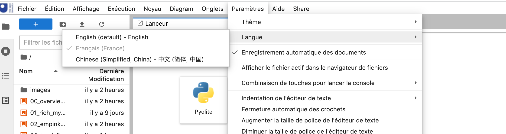
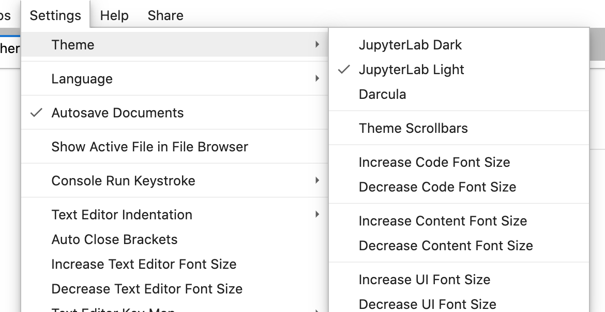
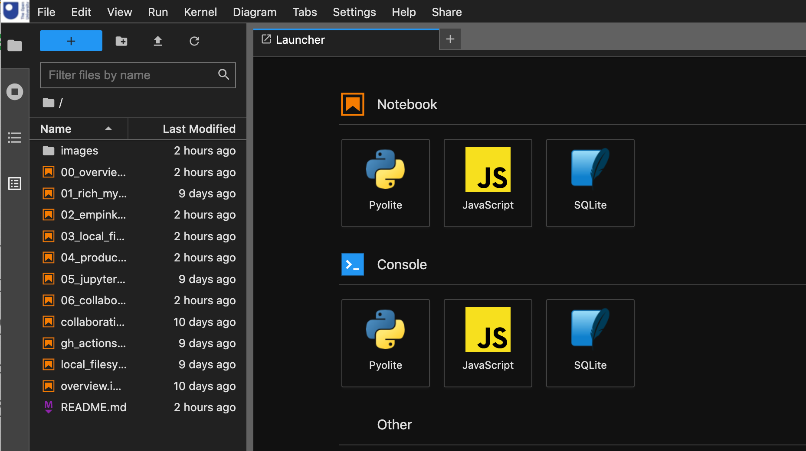
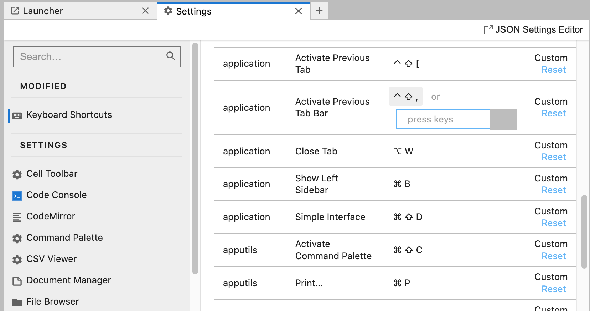

Localisation, Theming and Accessibility#
Being mindful that different users have different user interface needs, they are various ways in which we might support end user customisation of the user interface.
This chapter reviews three ways in which end-user customisation is supported in JupyterLab and Jupyter Notebook v7+:
localisation: support for language packs that render menus etc, in various languages (for example, English (default), French, Chinese);
themes: change the colour scheme, fonts, etc., used th render the user interface;
accessibility: extensions and quality assurance tools and processes intended to improve accessibility.
Localisation#
Language packs are available for a wide variety of languages (see list here).
Language packs can be installed from PyPi using commands of the form:
pip install jupyterlab-language-pack-fr-FR
Custom extensions can themselves be extended to include translation packs [docs].
To change the user interface language, from the Settings menu, select the Language submenu, followed by the language you requre, and then reload JupyterLab.

To minimise the size of the distributed environment, not all the available language packs are likely to be preinstalled. Where users run their own container, they should be able to install (and persist the installation of) language packs of their own choosing, and persist the language settings in their environment. For JupyterLite distributions, custom builds with the language pack preinstalled are probably required.
Themes#
By default, JupyterLab ships with the “traditional” JupyterLab Light theme as well as a complementary JupyterLab Dark theme. Users can select from one of the preinstalled themes from the Settings menu Theme submenu.

Additional themes can be installed as plugins and selected the same way.
Note that the OU custom branding is not currently sensitive to theme.

The no longer maintained arbennett/jupyterlab-themes repository defines a range of custom themes. Other themes can be found via the jupyterlab-theme tag on Github.
Support for developing custom themes is provided by the jupyterlab/extension-cookiecutter-ts. See also the docs for basic information on creating custom themes.
Accessibility#
Extensions developed explicitly to support accessibility are few and far between. Accessibility of the core UI is tracked, in part, via the Accessibility issues tag in the JupyterHub code repository.
As well as custom themes, we might also include the following as “accessibility related”:
keyboard shortcuts;
audible feedback;
terminal access;
accessibility / quality audit tools (on the basis that if problems are flagged up, we might address them…).
Keyboard Shortcuts#
Many of the controls provided by the JupyterLab user interface can be triggered using keyboard shortcuts. The full list of keyboard shortcuts can be viewed from, and modified, via the Keyboard shortcuts editor from the Settings > Advanced Settings Editor menu.

Audible Feedback#
The original classic notebook innovationOUtside/nb_cell_execution_status extension included various forms of audible feedback relating to cell execution, but these have not (as yet…) been ported over to the complementary innovationOUtside/jupyterlab_cell_status_extension extension.
Terminal Access#
As well as editing notebooks in a notebook style editor via the user interfaces developed by the core Jupyter developer team, various other individuals and community projects have developed approaches to viewing, running and editing notebooks via a terminal.
It might be useful to evaluate these from an accessibility perspective.
Examples include:
paw-lu/nbpreview, “a terminal viewer for Jupyter notebooks”;joouha/euporie, “a terminal app for running and editing Jupyter notebooks” [docs];davidbrochart/jpterm), terminal based access to notebooks via a Jupyter server; (I think this is a “next generation” version ofdavidbrochart/nbterm, produced by the same developer).
Quality Audit Tools#
Several tools exist to support code quality improvement in notebooks (linting, code formatting etc.) which can provide a benefit to all users arising from consistency of presentation, but as these are not directly related to “using” the user environment, they will not be considered how.
However, improving material quality in the context of alternative modes of presentation, such as image descriptions, or video transcripts, is more directly relevant. So what tools are there that might help us improve accessibility of materials, and particulalry notebook based materials, delivered via the JupyterLab user interface?
# TO DO: https://github.com/innovationOUtside/nb_quality_profile